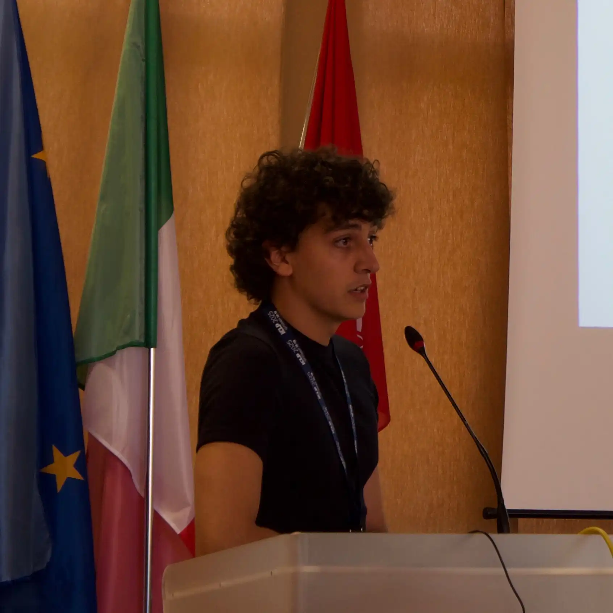

IMDEA Software Institute & UPM @ Madrid, Spain
Marco Ciccalè

I am a Ph.D. student in computer science at the IMDEA Software Institute and Universidad Politécnica de Madrid, advised by Manuel V. Hermenegildo, Jose F. Morales, and Pedro López-García. I am part of the CLIP Lab research group, and a developer of the Ciao Prolog system.
My research centers on abstract interpretation and its applications to the static analysis and verification of declarative and dynamic programming languages (e.g., Prolog). I am also drawn to the foundational side of the field, with interests spanning semantics, logic and order theory.
I work on top-down abstract interpretation for CHC-based languages. A framework that builds an analysis graph starting from a series of program entry-points using an optimized fixpoint algorithm.
- Expressiveness: The richer the language and the properties we can express, the harder they become to verify. The practical challenge is thus to push expressiveness as far as possible while static analyzers remain tractable able to prove meaningful properties. Richer language constructs, such as higher-order procedures and assertions, demand richer analysis techniques that can match their expressiveness.
- Efficiency: Fully safe execution requires checking every program property, but doing so entirely at run time is prohibitively expensive, while doing it entirely at compile time is impossible in general. The practical and most-efficient solution lies in between: discharging as many properties as possible statically, reserving run-time checks only for those that resist static analysis. We address efficiency at both levels: at compile time, assertions can guide the fixpoint computation, focusing the analysis on relevant call patterns and speeding up convergence; at run time, the inferred properties for the different call patterns are used to discharge checks selectively, placing run-time checks only on the specific versions of a predicate that need them, rather than guarding the predicate as a whole.
- Explainability: Analysis results are often opaque, leaving the programmer with little understanding of why a property was or was not verified. In some ongoing work, we address this through an interactive debugger for the top-down abstract interpretation algorithm, which provides real-time visibility into the progress of the analysis as it is being computed, allowing the programmer to inspect intermediate states, understand how properties are being propagated, where and when the analyzer is losing precision (e.g., widenings, disjunctions, etc.).
Exploiting Multiple Abstract Call Patterns for Optimizing Run-Time Checks
To appear in Theory and Practice of Logic Programming, special issue for the International Conference on Logic Programming (ICLP), 2026
In strongly-typed languages, types are verified at compile time, while dynamically typed languages, such as Prolog, perform type consistency checks entirely at run-time. Extending dynamic languages with assertions allows expressing both classical types and more general properties, providing high expressiveness, but at the cost of run-time overhead. Abstract interpretation allows safely approximating such program properties at compile time, which has been used to reduce the number of properties that require run-time checks, while still reporting unverified properties that can guide further static analyses, testing, or domain refinement. In this work, we first study how to selectively integrate the run-time semantics of assertion properties into a multivariant, top-down, goal-directed abstract interpretation algorithm. We then show how multiple inferred calling patterns can be exploited to reduce the number of properties that must be checked at run-time, thus minimizing the overhead. Finally, we report on an implementation of our approach in the Ciao system and provide performance results supporting that better results can be obtained
Hiord♯: An Approach to the Specification and Verification of Higher-Order (C)LP Programs
Theory and Practice of Logic Programming, special issue for the International Conference on Logic Programming (ICLP), 2025
Higher-order constructs enable more expressive and concise code by allowing procedures to be parameterized by other procedures. Assertions allow expressing partial program specifications, which can be verified either at compile time (statically) or run time (dynamically). In higher-order programs, assertions can also describe higher-order arguments. While in the context of (C)LP, run-time verification of higher-order assertions has received some attention, compile-time verification remains relatively unexplored. We propose a novel approach for statically verifying higher-order (C)LP programs with higher-order assertions. Although we use the Ciao assertion language for illustration, our approach is quite general and we believe is applicable to similar contexts. Higher-order arguments are described using predicate properties—a special kind of property which exploits the (Ciao) assertion language. We refine the syntax and semantics of these properties and introduce an abstract criterion to determine conformance to a predicate property at compile time, based on a semantic order relation comparing the predicate property with the predicate assertions. We then show how to handle these properties using an abstract interpretation-based static analyzer for programs with first-order assertions by reducing predicate properties to first-order properties. Finally, we report on a prototype implementation and evaluate it through various examples within the Ciao system.
Towards Verification of Higher-Order (Constraint) Logic Programs via Abstract Interpretation
M.Sc. thesis with honours, 2025
Higher-order constructs enable more expressive and concise code by allowing procedures to be parameterized by other procedures, resulting in more modular and maintainable code. Assertions are linguistic constructs for writing partial program specifications, which can then be verified either at compile time (i.e., statically) or run time (i.e., dynamically). In the case of higher-order programs, assertions provide descriptions of the higher-order arguments of procedures. In the context of (C)LP, the run-time verification of such higher-order assertions has received some attention. However, verification at compile time remains relatively unexplored. We propose a novel approach for the compile-time verification of higher-order (C)LP programs with assertions that describe higher-order arguments. Although our presentation is based for concreteness on the Ciao assertion language, the approach is quite general and flexible, and we believe it can be applied to similar gradual approaches. Higher-order arguments are described using predicate properties, a special kind of properties that allow using the full power of the (Ciao) assertion language for such arguments. We first present a refinement of both the syntax and semantics of these properties. Next, we introduce an abstract criterion to determine whether a predicate conforms to a predicate property at compile time, based on a semantic order relation to compare the definition of a predicate property and the partial specification of a predicate. We then propose a technique for dealing with these properties using an abstract interpretation-based static analyzer for programs with first-order assertions, by reducing predicate properties to first-order properties that are natively understood by such an analyzer. Finally, we report on a prototype implementation and study the effectiveness of the approach with various examples within the Ciao system.
Improvements in Ciao Prolog's Development Environment: Developing A Rich Development Environment for Ciao on Visual Studio Code
B.Sc. thesis with honours, 2024
The software industry has consistently experienced rapid and transformative changes since its beginning. A significant aspect of this evolution lies in the tools and utilities available for creating software solutions. These tools enable developers to focus on crafting solutions while minimizing time spent on non-essential tasks. Among these tools, the text editor is arguably one of the most crucial. In recent years, Visual Studio Code has emerged as the most widely used text editor globally. It allows users to extend its functionality through extensions implemented using modern web technologies. This project aims to explain the design and implementation of a Visual Studio Code extension for the Ciao programming language. The extension integrates core tools such as the Ciao preprocessor (CiaoPP) and the autodocumenter for (C)LP systems (LPdoc) in an intuitive and comprehensive way inside a modern and accessible text editor. This integration makes the extension suitable for developers of all expertise levels in logic programming and software verification.
Demonstrating the Ciao Prolog Playground
To appear in proceedings of Jornadas de Programación y Lenguajes (PROLE), 2026
We propose a demonstration of the Ciao Prolog Playground and the Active Logic Documents (ALDs) approach as a practical toolset designed to facilitate the teaching and learning of Prolog and formal methods, both on-line and in the classroom.
A logic programming-based, multi-paradigm programming language with +20 years of active development. The system integreates both static analysis and verification by abstract interpretation, and (property-based) testing facilities by using assertions as a common specification language for both. I'm one of the developers of the system, and it's the main platform for my research.
- ICLP'25 external reviewer.
Ph.D. in Computer Science
IMDEA Software Institute & Universidad Politécnica de Madrid
M.Sc. in Formal Methods in Computer Science and Engineering
Universidad Politécnica de Madrid & Universidad Complutense de Madrid
Grade: 9.18
B.Sc. in Computer Science
Universidad Politécnica de Madrid
Grade: 7.37